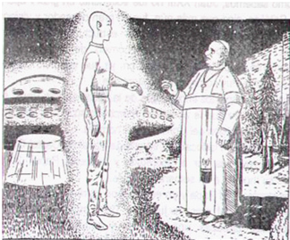
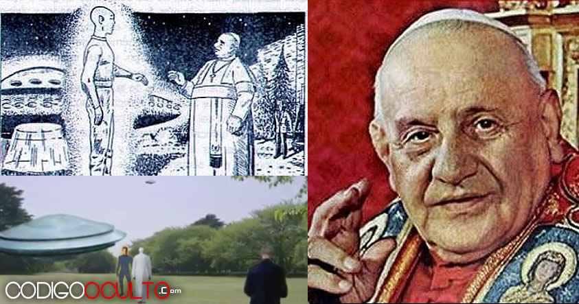
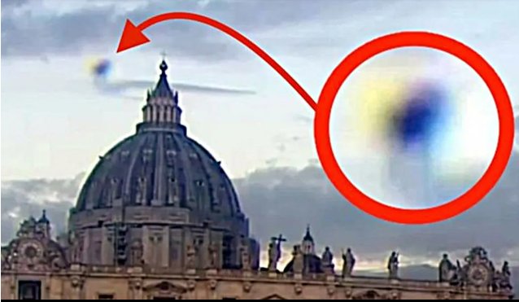
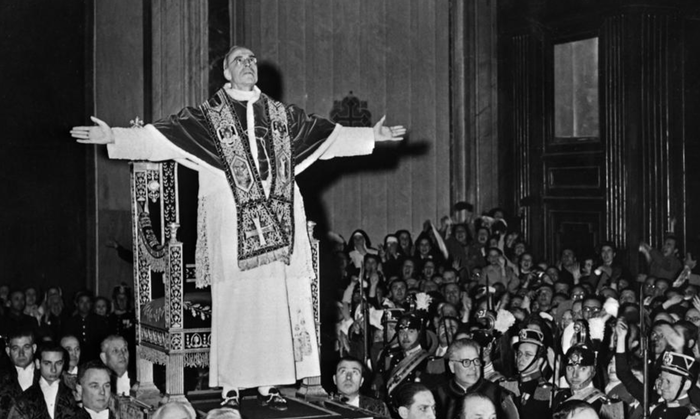

ARCHIVOS DESCLASIFICADOS

El Papa Juan XXIII y su Contacto Extraterrestre
El hecho increíble contiene un enorme valor espiritual y testimonial, mediante el cual, según el relato del asistente personal del pontífice, éste habría tenido un encuentro con un ser presuntamente extraterrestre, con el que dialogó durante varios minutos. Dijeron que el hecho ocurrió en la residencia de descanso papal de Castelgandolfo, en una noche de julio de 1961.
El relato de este hecho impactante y espectacular pertenece al asistente personal del sumo pontífice y fue publicado en Los Angeles Times el 23 de julio de 1985. La publicación fue recogida por prácticamente todos los diarios del mundo, pero rápidamente, como era de esperar, el hecho se envolvió en un prudente silencio. El Vaticano tampoco confirmó ni desmintió la versión periodística publicada.
El sacerdote Loris Capovilla, que se desempeñaba en esa época como secretario privado del Papa, fue el testigo directo de este sensacional hecho.
CASO:
El relato de Capovilla señala que:
"paseábamos con Su Santidad por los jardines del Vaticano, cuando vimos una fuerte luz acercarse en el cielo, un objeto muy luminoso se fue acercando lentamente, emitiendo luces de distintos colores intermitentes, era una gran nave de forma oval, que fue descendiendo despacio y luego se posó sobre el césped del lado sur del jardín.
Un extraño ser bastante alto salió de la misma, parecía humano, a excepción de que estaba rodeado por una luz dorada y tenía orejas alargadas. Su Santidad y yo nos arrodillamos. No sabíamos lo que estábamos viendo, pero supimos que no era de este mundo, por lo tanto debía ser un acontecimiento celestial. Nos quedamos allí y rezamos, cuando levantamos las cabezas, el ser estaba todavía allí. Eso fue una prueba de que no habíamos tenido una visión ni fue nuestra imaginación. El Papa se levantó y caminó hacia el ser, los dos estuvieron hablando durante unos 20 minutos más o menos. No me llamaron, así que permanecí quieto donde estaba. No pude oír nada de lo que hablaban porque estaban un poco lejos, pero veía como gesticulaban.
Finalmente el ser se dio vuelta, regresó a la nave y subió a ella que enseguida se elevó y desapareció en el cielo. Su Santidad volvió hacia donde yo estaba y me dijo: 'Los hijos de Dios están en todas partes, aunque algunas veces tenemos dificultades en reconocer a nuestros propios hermanos'. Después de eso continuamos nuestro paseo por el jardín como si nada hubiese pasado, pese a lo extraordinario del acontecimiento", relató.
Esta es una experiencia muy impresionante que deja abierto el interrogante de la vida fuera de nuestro planeta para algunos, mientras que para otros reafirma el contacto de los numerosos hechos similares que constan en las referencias bíblicas. Dando más detalles, Capovilla indicó:
“El nunca dijo nada de platos voladores, pero estoy seguro de que ambos teníamos a los visitantes en nuestras mentes. En algunas ocasiones el Papa fue sólo de paseo por los jardines y yo estaba seguro de que había Ovnis en el área, porque veía sus luces evolucionando a la distancia, pero no puedo asegurar que él volvió a verlos o no”.
Desde ese evento increíble que tuvo como protagonista al Papa Juan XXIII, Angello Roncalli, la Iglesia Católica profundizó sus investigaciones en torno a los extraterrestres. Es más, la Iglesia acepta la existencia de vida extraterrestre y hasta ha montado, conjuntamente con la Nasa en un lugar muy secreto, un centro de investigaciones para seguir de noche y de día los movimientos de esos seres y sus naves, a las que comúnmente se las llama Ovnis y que muchos aún niegan.
Otro caso, el del Papa Pío XII
Siguiendo con el relato de testigos altamente calificados, tenemos la experiencia que también tuvo el Papa Pío XII en la década del 50, en un informe que fue redactado por el cardenal Todeschini y que dice así: “El soberano pontífice se mostró muy turbado y emocionado como jamás se lo había visto antes y él mismo me confirmó. ‘Ayer he visto un prodigio que me ha impresionado profundamente. Era el día 30 de octubre de 1950 y alrededor de las cuatro de la tarde hacía mi paseo habitual en los jardines del Vaticano, leyendo y estudiando algunos documentos; ahí fui sorprendido por un fenómeno que no había visto antes.
El sol se encontraba todavía bastante alto y aparecía rodeado por un círculo luminoso que no impedía mirar detenidamente al astro sin sufrir ninguna molestia. El objeto realizaba movimientos rotativos y circulares, desplazándose de izquierda a derecha y viceversa, y en el interior del mismo se veían algunos movimientos como de personas que iban y venían. Varias veces intenté ver de nuevo el globo, en condiciones atmosférica similares, pero no tuve suerte, todo fue en vano, no pude volver a verlo’”. Este sorprendente hecho fue publicado en el libro de Juan José Benitez, “100.000 kilómetros tras los Ovnis.”
En síntesis, dos testigos altamente calificados como dos Papas, Juan XXIII y Pío XII, fueron quienes rompieron las barreras existentes hasta entonces entre la Iglesia y la prensa, relatando con lujo de detalles sus impactantes experiencias. En innumerables ocasiones la Iglesia ha mencionado la posibilidad de que exista vida similar a la nuestra en otros planetas.
El aporte testimonial de los pontífices como de sus secretarios privados, en una época en la que prácticamente era tabú hablar de estos temas, nos da una idea de lo importante que fue en su momento el hecho, y contribuyó grandemente a que el Vaticano se decidiera a incursionar en el campo de la investigación del fenómeno Ovni, como lo hicieron en los últimos tiempos las grandes potencias.
Sin duda, en los subsuelos del Vaticano se esconden misterios y enigmas que nosotros ni imaginamos y que quizás alguna vez se den a conocer, al menos parcialmente. La Iglesia está al tanto de todo lo referente a los Ovnis y vida extraterrestre y en más de una ocasión intervino escondiendo información a la gente y la prensa. Quizás alguna vez se dé a conocer la verdad…